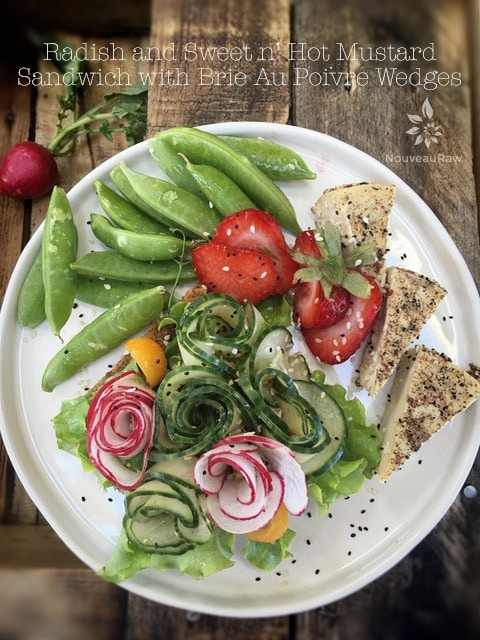

Radish and Sweet ‘n’ Hot Mustard Sandwich with Brie Au Poivre Wedges

Today’s plate is full of fresh, vibrant foods. To reach the full spectrum of all the healthy nutrients out there… aim to fill your plate with a rainbow of colors.
What does color have to do with nutrients? So happy that you asked. Plants contain chemical compounds called phytonutrients that promote health and protect against disease.
The phytonutrients in fruits and veggies give them their color and with each color comes with different vitamins, minerals, and phytonutrients. So if we the rainbow, we are assured to get many of the nutrients we need.
Red foods…
…contain large amounts of beta-carotene (vitamin A), fiber, and the antioxidants quercetin, vitamin C, and lycopene. We need these so we can help protect the body from free radicals, cancer, and heart disease.
Blue and purple foods…
….contain phytochemicals known as anthocyanins and resveratrol. Resveratrol has disease preventing and anti-aging properties which help to reduce inflammation, cholesterol, and risk of cancer and Alzheimer’s disease. Anthocyanins are anti-inflammatory and anti-carcinogenic. They help to lower the risk of diabetes, obesity, and cardiovascular disease. Blue and purple foods also contain lutein, vitamin C, quercetin and benefit our immune system, overall health, and longevity.
Orange foods…
… are loaded with lots of antioxidants including beta-cryptoxanthin and beta-carotene which converts to vitamin A in our bodies. If you are looking to support your eyes, skin health, maintain respiratory health, help arthritis, boost our immune system, and lower the risk of certain cancers… then you must add in orange foods.
Yellow foods…
… contain happy, cheerful antioxidants known as carotenoids and bioflavonoids. Carotenoids help protect us from diseases such as cancer, retinal disease, and heart disease while bioflavonoids strengthen the collagen of our skin, tendons, ligaments, and cartilages. Yellow foods are loaded with vitamin C which acts as an anti-inflammatory agent, as well as vitamin A, potassium, and lycopene. And let’s not forget that they also help to lower blood pressure and fight off harmful free radicals in the body.
Green foods…
… add vitamins A, C and K, iron, antioxidants such as carotenoids and flavonoids, and other nutrients including chlorophyll, lutein, zeaxanthin, and folate to our diet. These nutrients have been found to help with lowering the risk of cancer, lowering blood pressure, and LDL cholesterol levels as well as maintaining retinal (eye) health and boosting immunity. Plus, as we are well aware of… they are loaded with fiber to help digestion.
White foods…
… contain a host of nutrients including anthoxanthins. This helps to lower cholesterol and blood pressure, detoxifies our liver, helps with protein structure and skin health, and are packed with the flavonoid quercetin, known for its anti-inflammatory properties and cardiovascular health benefits. (yes, I realize that is one long run-on sentence) I was just so excited that I couldn’t stop to take a break. :)
So if you can, change the way you build a plate of food. Every day, aim to eat a different color-themed meal so that it looks like an artist’s palette. When we eat the rainbow, our meals will look beautiful, taste delicious, and offer us the best nutrients for our health. That doesn’t mean that you can add Cheetos or Doritos to your plate either. (I know what you were thinking… stop that! hehe). I hope that I gave you some “food for thought.” Be sure to post a photo of your colorful plate of food in the Facebook private group! Click (here) to join if you already haven’t. Blessings, amie sue
Recipes:
Extras:
- Radishes
- Cucumber
- Sugar Snap Peas
- Strawberries
© AmieSue.com